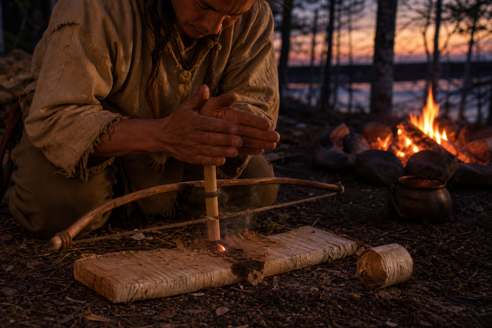
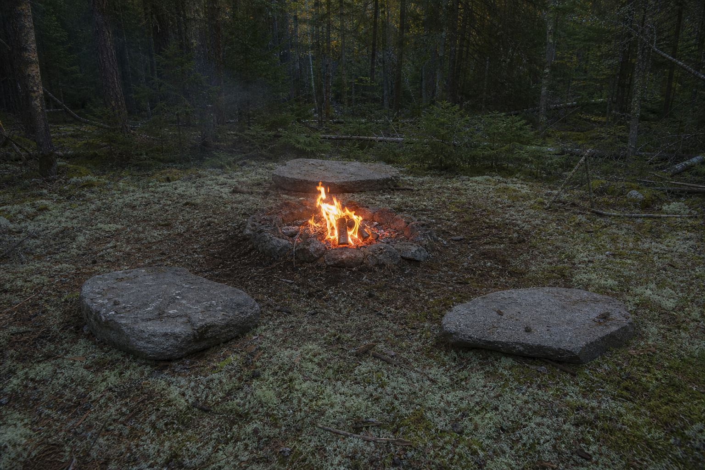
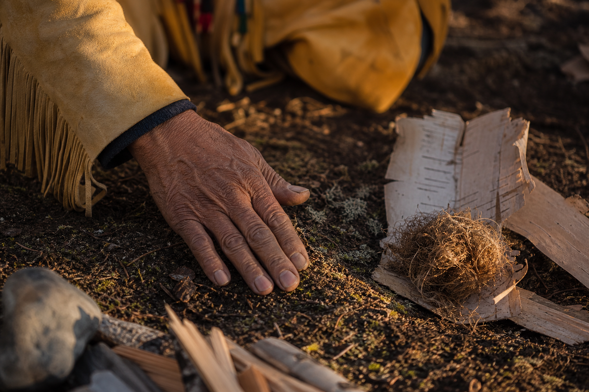
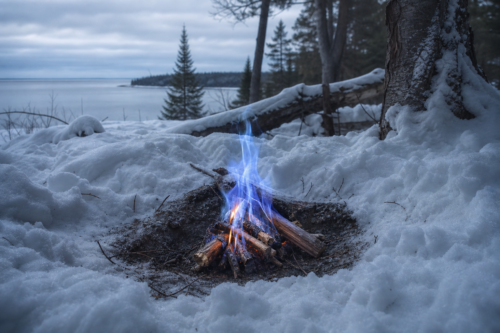

🔥 #78 — Le Feu sans allumettes — Liturgie des Anciens
Carnets de Pierre le Fouineur — Carnet n° 3
Carnet n° 3 — Jean-Claude — Mon ami Pierre m'a fait part des carnets de récits laissés par son arrière-grand-père, rédigés il y a longtemps : un carnet de route à travers les onze nations du Québec, composé avec le concours de leurs savoirs. Je te le transmets tel qu'il l'a écrit — je n'invente rien.
Qui est Pierre le Fouineur ?
Mon ami Pierre m'a fait part, un jour, de vieux carnets trouvés chez lui — les récits laissés par son arrière-grand-père, lui aussi prénommé Pierre. On l'appelait Pierre le Fouineur.
Ce n'était pas une moquerie, c'était un compliment. Coureur des bois, il marchait le Québec : portages, cabanes de troc où l'on échangeait farine, pelteries, histoires et silence. Il écoutait. Il notait. Nuit après nuit, dans des carnets de cuir usé, il couvait des mots — chasse, pêche, plantes, cérémonies. Les onze nations du territoire québécois y passent, chacune avec sa voix : il était le témoin qui écrit ; ils étaient ceux qui savaient.
Les carnets dormirent longtemps — grenier, malles, oubli. Puis Pierre, son arrière-petit-fils, les retrouva par hasard, comme on découvre une flèche coincée dans l'écorce d'un bouleau, et m'en confia la lecture.
Ce qu'il m'a remis n'est pas de l'or jaune. C'est mieux : une mine de récits vivants, au milieu des différentes nations du Québec — des textes anciens, respectueux, écrits avec le concours de ceux qui partageaient leur savoir. Je n'invente rien. Je transmets.
Voici l'un de ces carnets, remis entre mes mains par Pierre.

Le feu par friction : une liturgie, pas une astuce — alliance entre l'homme, le bois et les éléments.
La technique dont Pierre va vous parler n'est pas une lubie de vieillard, ni un numéro de magie de cirque. C'est une liturgie. Une alliance renouvelée entre l'homme, le bois et les quatre éléments. Elle ne peut être apprise en quelques lignes. Elle doit être vécue.
— Écrit entre La Tuque et le lac Métabetchouan, décembre 1921 —
1. Le choix du bois — L'alchimie des dieux invisibles

Première règle, la plus invisible : le bois ne s'attrape pas au hasard. Il choisit.
- Le bois à friction (mashkodegi en anishinaabemowin) — On ne prend pas du frêne qui pousse droit vers le ciel comme une flèche impatiente. Le frêne est fier, trop sec, trop nerveux. Non. On cherche un bouleau blanc (wiigwaas), un peuplier faux-tremble (asemaa), ou un saule (omin) — des bois tendres, imprégnés d'une sève qui résiste. Mais pas n'importe lequel : un bois mort depuis moins de six lunes, encore humide de sève, pas encore pourri. Un bois qui garde en lui la mémoire de l'eau.
- Le bois de cœur — Toujours séché à l'ombre, à l'abri du soleil qui durcit les fibres. Si vous voyez un bouleau qui penche vers le nord, c'est bon signe. Le vent du nord apporte la fraîcheur, la patience.
« Le feu, c'est comme une personne, disait Tekahentakwen, une Huronne de Wendake. Tu ne forces pas ton cœur à battre. Tu respires. Et le feu respire avec toi. »
2. Le bureau du feu — Le cercle sacré sous le ciel ouvert
On ne fait pas du feu n'importe où. Il faut trouver le bon endroit.
- Le cercle de pierres — Placement de trois pierres plates en triangle (Nord-Sud-Est) pour canaliser la chaleur. Si le vent souffle du nord-ouest, on place la troisième pierre du côté où le vent arrive — comme un bouclier invisible.
- Le tapis de mousse — On dispose une couche de mousse séchée ou de lichen (akisken) sous les pierres. Ces plantes sont des architectes de chaleur : elles retiennent la chaleur comme une couverture de sommeil.
- L'orientation — Le feu doit être placé face au sud-est, là où naît le soleil. Le soleil est le premier allumeur. Son regard doit caresser les flammes avant qu'elles ne dansent.
3. L'étreinte du feu — La technique des Anciens en 7 étapes
Ce n'est pas Pierre qui a inventé cette méthode. Ce sont les vieux.
Étape 1 : Le pyre perdu — Préparer la nourriture
- Creusez un petit cratère dans la terre froide (pas dans le sable — la terre retient la chaleur comme une mère).
- Déposez au centre une poignée de poudre de bouleau (wiigwaasindib), telle une offrande invisible. La poudre de bouleau est un concentré de sève, une olive d'huile naturelle.
- Ajoutez une pincée de sève de sapin rouge (pas de résine jaune — elle brûle trop vite et pique les yeux).
Étape 2 : Le boîtier des étincelles — Le bâton de perçage
- Prenez un morceau de bois de peuplier ou de bouleau (section de 2 cm de diamètre, 20 cm de long).
- Taillez une extrémité en biseau, comme un burin.
- Choisissez un autre morceau de bois dur (érable, chêne) comme « planche de friction » (2 cm d'épaisseur, 30 cm de long, avec une encoche en V pratiquée au couteau).
Étape 3 : L'arène des étincelles — Le conseil sacré
- Placez la planche de friction à plat sur la terre, sous la protection de votre genou.
- Placez le bâton de perçage dans la paume de votre main droite (si vous êtes droitier), la pointe pénétrant dans l'encoche.
- Appuyez avec la paume de votre main gauche, comme si vous serriez un cœur.
Étape 4 : Le ballet des mains — La danse de la friction
Asseyez-vous, genoux pliés, dos droit, pieds à plat contre la planche de friction — comme si vous étiez un arbre enraciné.
- Frottez le bâton contre la planche, rapidement, en décrivant des petits cercles (comme si vous limiez un crayon).
- Vous devez sentir la chaleur monter — une douleur sourde dans la paume après 30 secondes.
- Après 1 minute, vérifiez la pointe du bâton : elle doit être noire de carbone, prête à s'embraser.
Étape 5 : Capturer l'esprit — Le nid de charbon
- Sous l'encoche de la planche, déposez un petit nid de lichen sec (akwaskeen) ou de mousse (waskone).
- Les étincelles ne sont pas toujours visibles. Elles dansent comme des lucioles entre vos doigts.
- Soufflez doucement sur la pointe du bâton — jamais directement sur le nid. Le souffle doit être une caresse, pas un coup de vent.
Étape 6 : Le premier souffle — Le baiser du vent
- Quand une lueur orange apparaît dans le nid (pas de flamme), ajoutez des brindilles ultralégères (ozaawashkwigamig — écorce interne de bouleau, filament noir du peuplier).
- Elles s'embrasent — la première flamme — comme un cœur qui s'allume.
Étape 7 : La croissance — Le feu devient un conseil
- Ajoutez des bûches plus épaisses en cèdre ou frêne, toujours en cercles concentriques. Pendant 15 secondes après la première flamme, ne bougez pas. Le feu est encore fragile.
- Puis, par cercles extérieurs, ajoutez des branches plus grosses. Un feu correctement allumé ne fume pas. Il chante.
- Pendant ce temps, parlez. Chantez. Baissez la voix. Le feu écoute. Et si vous avez bien fait votre travail, il grandit en silence.
4. Le langage du feu — Ce qu'il dit si vous savez écouter
Un feu mal allumé fume et pleure. Un feu bien allumé chante et murmure.
- Flamme bleue : le bois est encore trop jeune. Ajoutez une bûche de cèdre.
- Flamme qui s'élève droite vers le ciel : le bois est sec, la technique est bonne. Laissez-la grandir.
- Fumée blanche et légère : le bois respire. Tout va bien.
- Fumée noire et âcre : le bois est trop vert. Étouffez le feu, recommencez.
5. La prière du feu — Mot à dire avant la première étincelle

Avant de commencer, placez une main sur la terre et dites, ou chantez :
Aki, Nokomis Gitchi Manitou,
Wikwedong endaso-giizisok,
Miinawaa gegoo minwendaan,
Gida-aki-ogijidaa.
Anishinaabe gikendaasowin,
Aki e-waabamaag.
Mishomis ogima awesiinh,
Wiisini netawizin
Gego baterdisiyaanh.Terre, Grand-Mère du Grand Esprit,
que le soleil se lève et se couche en paix,
et que rien ne soit gaspillé.
Que la leçon d'ici soit enseignée,
le savoir de l'homme ancré dans la terre.
Le créateur animal a parlé : « Mange, mais ne prends pas plus que ton besoin. »
6. Après le feu — La cérémonie du silence
Quand le feu s'éteint — ce qui prend des heures, parfois des jours — ne jetez pas les cendres. Disperser-les dans un cours d'eau, ou les enterrer sous un bouleau. C'est une façon de rendre ce que la terre a donné.
Car un feu, petit ou grand, ce n'est pas une invention humaine. C'est une alliance renouvelée. Et les alliances, si on les oublie, finissent par s'éteindre elles aussi.
Supplément — Le feu dans la neige

Mars 1924, lac Métabetchouan : le feu comme miracle quand la neige tombe.
Pour Pierre, la plus grande preuve de respect envers le feu est de l'allumer quand il neige. Quand la neige tombe comme une couverture, quand le vent hurle à travers les sapins, quand vos doigts sont déjà engourdis — c'est là que le feu devient un miracle.
Sur le lac Métabetchouan en mars 1924, il a allumé un feu à partir d'un seul morceau de bois de peuplier noirci. La neige tombait. Le sapin gémissait. Et le feu a brûlé droit, presque bleu, comme si les esprits avaient finalement accepté sa requête.
Ce n'est pas une question de technique. C'est une question d'humilité.
Pour ceux qui veulent apprendre : la nation algonquine de Kitcisakik organise des ateliers mensuels en forêt — pas en été, pas quand il fait bon — mais en hiver, quand le silence est roi et que savoir allumer un feu devient une question de survie. Les places sont limitées. Parce que ce savoir, contrairement au reste, ne s'achète pas. Il se mérite.
Friction et étincelles
Cercle sacré
Feu et neige
Prière et respect
Merci à Pierre pour ce carnet, et aux nations dont les savoirs l'ont nourri. — Jean-Claude
« Si vous y arrivez, le feu vous regardera. Si vous échouez, la terre vous enseignera. » — Pierre le Fouineur